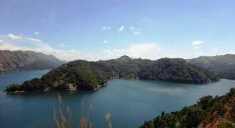

IDUKKI
Idukki district is a densely forested, mountainous region in the south Indian state of Kerala. In the north, Anamudi mountain towers over Eravikulam National Park, where the rare, blue Neelakurinji flower blooms every 12 years. Nearby, Munnar is a hill station known for its sprawling tea plantations and Tea Museum. Farther south is the vast, curved Idukki Dam and Periyar National Park, a tiger and elephant reserve.

Nadukani

After all the blessings from temples, it is time for some adventure. Nadukani is one such place nestled amid the wilderness of nature and densely wooded hills offering its visitors a beautiful trail for trekking.
Lying at an altitude of 3000 ft above the sea level atop a hill, this place also affords a mesmerizing view of mountains on northern side and that of River Muvattupuzha.
Readmore
Kulamavu Dam

Situated in Kulamavu, the Kulamavu Dam is a gravity dam. The dam part of three dams dedicated to the Idukki Hydro Electric Power Plant that also encloses a manmade lake. Although quite mundane, this dam is a good place for some short sightseeing.
Besides, Kulamavu dam is also part of the state's largest river, Periyar's power ventures. However, photography is not allowed here. There are occasional boating facilities at the lake here. Quite close to the dam are a few eating options.
Readmore
Hill View Park

Located just about a kilometre from the Idukki city centre, the Hill View Park is set up approximately 350 feet from the Idukki dam. As the name suggests, Hill View Park is one such places in Idukki that offers spectacular views of the Cheruthoni and Idukki Dams.
Besides being a famous tourist destination of Idukki, this park is also a great place to spot diverse wildlife in its belt natural habitat. Hill View Park also has a couple of recent adventure additions including ziplining.
A sloping path up to Hill View Park opens visitors to a serene green atmosphere with a few eating options and toilet facilities as well. There is also a children's play area with slides and swings within this park. One of the top buys here is the famous spiced chocolate. Hill View Park is a great photo op for the Idukki dam, as it is not allowed to click pictures at the dam.
Readmore